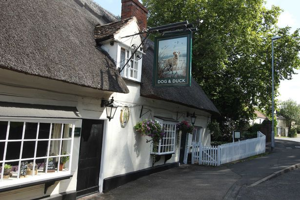

I am a born and raised cambridge boy, born at addenbrookes hospital.
I then moved to the outskirts of cambridge in a village called linton,
Which has one this iconic pub still running after all these years, called the Dog n Duck.
I visit linton still go back to every week to play football.
I studied a national sports diploma in college when i was 16 years old then realised a year ago that i have a passion for computers.
In the sense that i love to be behind one constantly
